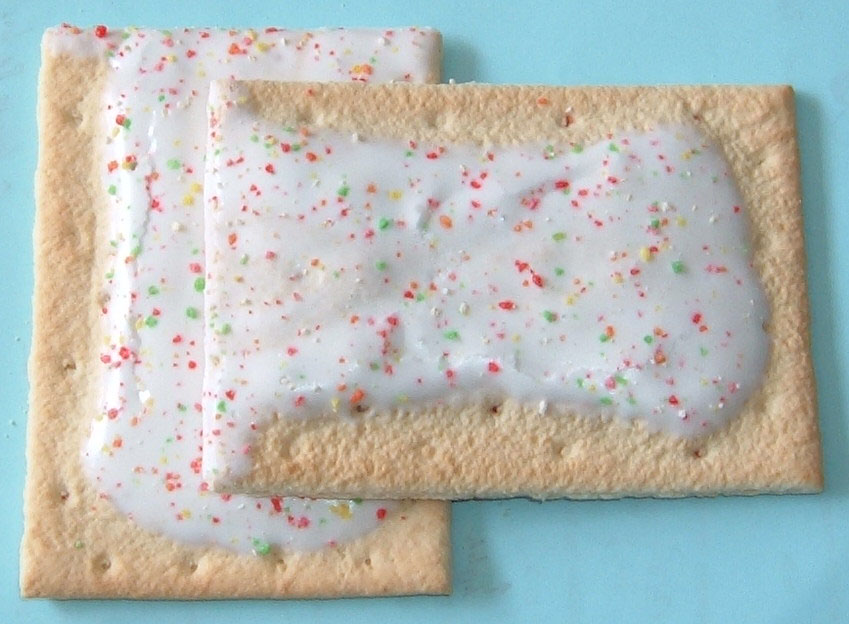

연관 분석 · 우리 학교 급식 세트와 금지 짝을 찾는다
9차시에는 정답표 없이 영화를 비슷한 것끼리 묶었습니다. 오늘도 정답표는 없습니다. 이번에는 당곡고 중식 184일에서 같은 날 함께 나오는 메뉴를 찾습니다.
먼저 기사를 엽니다. 편의점 영수증에서 찾은 규칙 하나가 상품이 된 이야기입니다.
여러분이 편의점 본사의 상품기획 담당자라고 가정합니다. 하루에 쌓이는 영수증은 수백만 장입니다. 그 안에서 한 가지만 확인합니다. 박카스가 찍힌 영수증에는 무엇이 함께 찍혀 있는가.
GS25가 얻은 답은 1위 얼음컵, 2위 사이다였습니다. 이미 많은 손님이 세 가지를 따로 사서 직접 섞어 마시고 있었습니다. GS25는 이 결과를 동아제약에 가져갔습니다. 세 가지를 합친 음료를 제안했고, 2025년 6월 25일 '얼박사'라는 이름으로 출시했습니다. 두 달 만에 누적 판매량 278만 개를 기록했습니다(파이낸셜뉴스 2025년 9월 24일).
여기서 확인해 둘 것이 있습니다. "함께 많이 팔린 1위"는 아직 한 가지 숫자일 뿐입니다. 얼음컵은 원래 거의 모든 음료와 함께 팔리는 상품일 수도 있습니다. 그 구분을 하려면 숫자가 하나 더 필요합니다.
오늘 우리가 세는 것은 영수증이 아니라 당곡고 급식 184일입니다. 어느 반찬이 어느 반찬과 함께 나오는지부터 세어 봅니다.
두 문제를 급식을 먹어 본 감으로 답합니다. 계산은 하지 않습니다. 공책에 답을 적으면 선생님이 학급의 답 분포를 칠판에 적습니다.
- ㉮ 제육볶음 + 배추김치
- ㉯ 쇠고기미역국 + 칼슘강화기장밥
- ㉰ 떡볶이 + 배추김치
- ㉱ 순대국 + 배추김치
- ㉮ 배추김치 + 깍두기
- ㉯ 배추김치 + 제육볶음
- ㉰ 친환경현미밥 + 배추김치
- ㉱ 칼슘강화기장밥 + 쇠고기미역국
같은 급식을 먹어도 답은 학생마다 다릅니다. 자주 나오는 반찬은 어느 메뉴와도 자주 겹칩니다. 그래서 함께 나온 횟수만으로는 세트를 정할 수 없습니다.
정답은 3절에서 탐색 앱으로 직접 확인합니다.
0. 오늘의 목표
연관 분석은 함께 나타나는 항목을 찾는 방법입니다. 오늘은 하루 중식 식단을 한 건으로 봅니다. 두 메뉴가 같은 날 함께 나오는 정도를 숫자로 나타냅니다.
오늘의 결과물은 둘입니다. 내가 만든 급식 규칙 탐색 앱, 그리고 근거 숫자를 붙여 정리 폼에 적은 급식의 특징 세 가지입니다.
- 지지도·신뢰도·향상도의 분모를 말하고, 손으로 구할 수 있다.
- 신뢰도가 높아도 향상도가 1 근처면 정보가 없다는 것을 급식 규칙으로 보일 수 있다.
- 찾은 규칙을 근거 숫자와 함께 한 줄의 특징으로 적을 수 있다.
1. 개념 이해 — 교과서의 세 숫자
"연관 분석(association analysis)이란 데이터베이스에서 그 안에 존재하는 항목 간의 유용한 연관 규칙을 발견하는 것이다." (157쪽)
"연관 분석은 고객의 구매 내역을 분석하는 데 흔히 쓰여 '장바구니 분석'이라고도 한다." (157쪽)
→ 오늘은 급식 184일을 장바구니로 봅니다. 같은 날 함께 나온 메뉴의 규칙을 찾습니다.
당곡고 중식 184일에서 같은 날 함께 나온 두 메뉴의 짝은 3,000가지가 넘습니다. 볼 만한 짝을 고르는 기준은 숫자 세 개입니다. 급식 하나로 세 숫자를 익힙니다.

| 184일에서 센 것 | 값 |
|---|---|
| 돈육감자탕이 나온 날 (앞 메뉴) | 6일 |
| 석박지가 나온 날 (뒤 메뉴) | 20일 |
| 둘이 같은 날 함께 나온 날 (동시) | 6일 |
| 단계 | 계산 | 값 | 묻는 말 |
|---|---|---|---|
| ① 지지도 | 동시 ÷ 전체 = 6 ÷ 184 | 0.033 | 이 조합은 전체에서 얼마나 자주 있는 일인가 |
| ② 신뢰도 | 동시 ÷ 앞 메뉴 = 6 ÷ 6 | 1.00 | 돈육감자탕을 보고 석박지를 찍으면 맞힐 확률 |
| ③ 등장률 | 뒤 메뉴 ÷ 전체 = 20 ÷ 184 | 0.11 | 아무 날이나 석박지를 찍으면 맞힐 확률 |
| ④ 향상도 | 신뢰도 ÷ 등장률 = 1.00 ÷ 0.11 | 9.20 | 돈육감자탕을 보고 찍는 것이 아무 날 찍기보다 몇 배 잘 맞는가 |
신뢰도 1.00은 돈육감자탕이 나온 날에 석박지가 빠짐없이 나왔다는 뜻입니다. 여기까지는 숫자 두 개로 충분해 보입니다. 그런데 뒤 메뉴가 원래 거의 날마다 나오는 반찬이면, 앞 메뉴가 무엇이든 따라 나오므로 신뢰도가 1.00이어도 새로 알게 되는 것이 없습니다. 그래서 ③④가 필요합니다.
| 돈육감자탕 → 석박지 | 카레라이스 → 배추김치 | |
|---|---|---|
| 앞 메뉴가 나온 날 / 동시 | 6일 / 6일 | 6일 / 6일 |
| 신뢰도 | 1.00 | 1.00 |
| 뒤 메뉴의 등장률 | 0.11 (20일) | 0.55 (이틀에 한 번 넘게) |
| 향상도 | 9.20 | 1.80 |
| 판정 | 세트. 감자탕이 석박지를 알려 준다 | 정보 없음. 아무 날 찍어도 절반 넘게 맞는다 |
두 규칙은 신뢰도가 같습니다. 그러나 배추김치는 카레라이스를 보지 않고 아무 날이나 찍어도 절반 넘게 맞습니다. 향상도가 그 차이를 보여 줍니다. 세트라고 부를 수 있는 쪽은 돈육감자탕 → 석박지입니다.
| 숫자 | 계산식 (N: 전체 일수) | 묻는 말 |
|---|---|---|
| 지지도 | A·B 동시 일수 ÷ N | 이 조합은 얼마나 자주 있는 일인가 |
| 신뢰도 | A·B 동시 일수 ÷ A 등장 일수 | A가 나온 날에 B도 나오는가 |
| 향상도 | 신뢰도 ÷ (B 등장 일수 ÷ N) | 아무 날이나 B를 찍는 것보다 몇 배 잘 맞는가 |
"지지도는 두 개의 사건이 동시에 발생하는 비율이며 …" (159쪽)
"신뢰도는 규칙의 결과 부분이 발생할 가능성을 측정한다." (159쪽)
"두 사건 A와 B가 서로 영향을 주지 않고 독립적으로 발생한다면, 향상도는 1에 가까워진다." (160쪽)
→ 위에서 급식으로 구한 세 숫자가 교과서의 지지도·신뢰도·향상도입니다.
향상도 1은 A가 나온 날의 B 비율이 B의 평소 등장률과 같다는 뜻입니다. 1보다 크면 A가 나온 날에 B가 더 자주 나왔습니다. 1보다 작으면 덜 나왔습니다.
교과서의 {삼겹살} → {쌈채소} 규칙은 향상도가 1.67입니다. 삼겹살을 산 거래의 쌈채소 구매 비율이 전체 거래의 쌈채소 구매 비율보다 1.67배 높다는 뜻입니다.
2. 손계산이 먼저 — 활동지 기본 문제
계산은 활동지에 손으로 적습니다. 규칙 A는 제육볶음 → 배추김치, 규칙 B는 순대국 → 석박지입니다. 두 규칙을 지지도·신뢰도·향상도 순서로 풉니다.
활동지의 수는 계산이 떨어지도록 고른 값이며 실제 관측값이 아닙니다. 나눗셈이 두 자리 소수에서 끝나므로 계산기가 필요 없습니다.
이 차시의 위젯은 선생님이 앞에서 보여 주는 화면입니다. 화면이 답을 먼저 보여 주면 계산 순서를 익힐 수 없습니다. 먼저 활동지에 손으로 적고, 다 푼 뒤에 화면의 값과 대조합니다.
| 단계 | 활동지에 적는 것 | 확인할 점 |
|---|---|---|
| ① 횟수 | 앞 항목·뒤 항목·함께 나온 횟수 | 세 수를 먼저 적어야 나머지가 나옵니다. |
| ② 지지도 | 함께 나온 횟수 ÷ 전체 | 이 조합이 얼마나 자주 있는 일인지를 봅니다. |
| ③ 신뢰도 | 함께 나온 횟수 ÷ 앞 항목의 횟수 | 분모가 앞 항목입니다. 지지도와 분모가 다릅니다. |
| ④ 등장률 | 뒤 항목의 횟수 ÷ 전체 | 비교의 기준이 되는 값입니다. |
| ⑤ 향상도 | 신뢰도 ÷ 등장률 | 분모는 뒤 항목의 등장률입니다. 1이 나오면 두 값이 같다는 뜻입니다. |
| ⑥ 판단 | 어느 규칙으로 찍을지와 그 까닭 | 두 지표가 다른 규칙을 가리키면 목적을 먼저 정합니다. |
급식표에서 메뉴 하나만 보고 나머지 반찬 하나를 찍는 문제입니다. 규칙 A와 규칙 B 가운데 어느 규칙으로 찍을지 정합니다.
규칙 A를 풀기 전에 제육볶음이 나온 날 배추김치도 나올 비율을 먼저 어림해 적습니다. ③단계에서 구하는 신뢰도가 그 숫자입니다.
⑤단계에서는 규칙 A의 신뢰도와 배추김치의 등장률을 나란히 놓고 비교합니다. ⑥ 판단에 어느 규칙으로 찍을지와 근거 지표 하나를 적습니다.
두 규칙 모두 그럴듯해 보입니다. 지지도로 보면 규칙 A가 앞서지만 신뢰도에서 순위가 뒤집힙니다. ①부터 ⑥까지의 순서를 그대로 3절의 급식 184일에 적용합니다.
A → B와 B → A는 다른 규칙입니다. 신뢰도의 분모가 앞 메뉴가 나온 일수이기 때문입니다.
급식 184일에서 확인합니다. 순대국은 5일, 석박지는 20일 나왔고 함께 나온 날은 5일입니다. 순대국 → 석박지의 신뢰도는 5 ÷ 5 = 1.00, 석박지 → 순대국의 신뢰도는 5 ÷ 20 = 0.25입니다.
지지도와 향상도는 방향을 바꾸어도 같습니다. 지지도의 분모는 전체 일수 하나뿐이고, 향상도는 두 방향 모두 9.20입니다.
그러므로 "석박지가 나오는 날은 순대국이 나온다"라고 말하려면 석박지 → 순대국의 신뢰도를 확인해야 합니다.
활동지 기본 문제는 스무 날 기준이므로 수가 다릅니다.
손으로 구한 값을 아래 그림의 막대 두 개와 비교합니다. 위 막대가 신뢰도, 아래 막대가 뒤 메뉴의 등장률입니다. [방향 바꾸기] 버튼을 누르면 앞뒤를 바꾼 값이 표시됩니다.
3. 실습 ①②③ — 급식 규칙 탐색 앱을 만들고 세트·금지 짝·함정을 찾는다
DG푸드는 이 수업에서만 사용하는 가상의 급식 납품 회사입니다. 분석에 사용하는 급식 기록은 당곡고에 실제로 나온 식단입니다.
식단팀은 어느 반찬이 어느 반찬과 함께 나가는지를 알아야 재료를 미리 준비하고 안내를 붙일 수 있습니다.
인턴은 찾은 세트를 그대로 보고하지 않습니다. 어느 규칙이 세트인지 근거 숫자를 붙여 보고합니다.
| MLSV_YMD | DDISH_NM |
|---|---|
| 20250902 | 친환경현미밥 <br/>근대된장국 (5.6)<br/>오이상추무침 (6.13)<br/>제육볶음 (6.10.13)<br/>… |
{ 친환경현미밥, 근대된장국, 제육볶음, … }3절에서는 탐색 앱을 직접 만듭니다. 앱은 급식 API로 2025년 9월 1일부터 2026년 9월 30일까지의 중식을 조회합니다. 하루 식단을 장바구니 한 건으로 바꾸고, 메뉴 이름의 괄호는 제거합니다.
인증키는 선생님이 나눠 줍니다. 아래 상자의 순서대로 비밀 금고에 NEIS_API_KEY라는 이름으로 넣습니다.
①에서 화면 둘(세트 찾기, 메뉴 확인)을 만들고 탐색 카드 1·2를 진행합니다. ③에서 화면 둘(금지 짝 찾기, 요일)을 더하고 탐색 카드 3과 요일 확인을 진행합니다. 카드마다 끝에 특징 후보 한 줄을 근거 숫자와 함께 적습니다.
앱이 실행되지 않으면 선생님이 알려 주는 예비 탐색 앱 주소로 같은 카드를 진행합니다.
화면은 앱 왼쪽의 메뉴에서 고릅니다. 오늘 찾는 것은 셋입니다. 아래 세 이름은 이 수업에서만 사용하는 말이고, 교과서 용어로는 모두 연관 규칙입니다.
| 오늘 쓰는 말 | 뜻 | 숫자로 보면 |
|---|---|---|
| 세트 | 앞 메뉴가 나오면 뒤 메뉴도 거의 늘 나오는 짝 | 신뢰도가 높고 향상도도 높다 |
| 금지 짝 | 둘 다 자주 나오는데 같은 날 나온 적이 없는 두 메뉴 | 동시 0일 |
| 함정 | 자주 맞히기는 하지만 새로 알려 주는 것이 없는 규칙 | 신뢰도는 높고 향상도는 1 근처 |
프롬프트 ①은 화면 둘을 만듭니다. 세트 찾기 화면에는 규칙 표와 최소 동시 일수 슬라이더, 정렬 고르기, 메뉴로 좁히기가 들어갑니다. 메뉴 확인 화면은 메뉴 하나의 등장 일수와 나온 날짜를 표시합니다.
프롬프트 아래의 API 문서 발췌는 그대로 둔 채 붙여 넣습니다.
급식 API 인증키는 선생님이 수업 시간에 알려 줍니다. 긴 글자와 숫자로 된 한 줄입니다. 이 키를 코드에 적지 않고 앱의 비밀 금고(Secrets)에 넣습니다. 순서는 다음과 같습니다.
- 선생님이 알려 준 인증키를 복사합니다. 앞뒤에 빈칸이 들어가지 않게 합니다.
- AI가 준 main.py와 requirements.txt를 깃허브 저장소에 올리고, 스트림릿 클라우드(share.streamlit.io)에서 Create app을 눌러 그 저장소를 고릅니다. Main file path에는 main.py를 적습니다.
- Deploy를 누르기 전에 Advanced settings를 열고 Secrets 칸에 아래 한 줄을 붙여 넣습니다. 따옴표 안에 복사한 키를 넣습니다. 이름 NEIS_API_KEY는 철자 하나도 바꾸지 않습니다.
NEIS_API_KEY = "여기에 복사한 인증키"
- 이미 배포한 앱이면 앱 화면 오른쪽 아래 Manage app → ⋮ → Settings → Secrets에 같은 한 줄을 넣고 Save를 누릅니다.
- 앱을 다시 엽니다. 맨 위 캡션에 급식 일수와 메뉴 종수가 나오면 성공입니다. "비밀 금고에 NEIS_API_KEY를 설정하세요"라는 문구가 보이면 이름 철자와 따옴표를 확인합니다.
- 내 컴퓨터에서 직접 실행할 때는 main.py 옆에 .streamlit 폴더를 만들고 그 안의 secrets.toml 파일에 같은 한 줄을 적습니다.
인증키는 코드·프롬프트·깃허브·갤러리에 적지 않습니다. 앱이 끝내 실행되지 않으면 선생님이 알려 주는 예비 탐색 앱 주소로 같은 활동을 합니다.
급식은 날마다 쌓입니다. 화면에 표시되는 일수와 메뉴 종수, 규칙 수는 실행하는 날에 따라 달라집니다.
- ① 샘플 프롬프트 — 그대로 붙여 넣기
① 프롬프트
"급식 규칙 탐색" 스트림릿 앱을 만들어 줘. 파일 이름은 main.py. 당곡고 급식을 나이스 급식 API로 받아서 하루 중식 식단을 장바구니 하나로 보고, 같은 날 함께 나온 메뉴를 찾아 줘. - 인증키는 비밀 금고에 NEIS_API_KEY라는 이름으로 넣어 뒀어. 코드에 직접 적지 말고 거기서 꺼내 써. - 기간은 2025년 9월 1일부터 2026년 9월 30일까지, 중식만. 조회된 모든 페이지를 받아 날짜별로 한 건씩 세어 줘. - 조회된 전체 건수보다 적게 받았으면 계산하지 말고 안내 문구를 보여 줘. - 하루 식단을 메뉴별로 나누고, 메뉴 이름의 괄호와 그 안의 내용은 전부 제외해 세 줘. - 화면 맨 위에 조회 기간, 분석한 날 수, 메뉴 종류 수, 같은 날 함께 나온 적이 있는 메뉴 쌍의 수를 적어 줘. - 화면은 "세트 찾기"와 "메뉴 확인" 둘로 만들고 옆에서 골라 열 수 있게 해 줘. - 세트 찾기에는 규칙 표를 보여 줘. 열은 조건, 결과, 조건 일수, 결과 일수, 동시, 지지도, 신뢰도, 향상도. - 세트 찾기에는 최소 동시 일수를 1부터 10까지 고르는 슬라이더를 두고 기본값은 4로 해 줘. - 정렬은 신뢰도 순, 향상도 순, 동시 순 가운데 고르게 하고, 메뉴 이름을 고르면 그 메뉴가 들어간 규칙만 모아 볼 수 있게 해 줘. - 향상도가 0.9와 1.1 사이인 규칙에는 "아무 날 찍기와 같음"이라고 표시해 줘. - 향상도 상위 열 개는 plotly로 가로 막대그래프도 그려 줘. - 메뉴 확인에서는 메뉴 하나를 고르면 그 메뉴가 나온 날 수와 전체 날 수에서 차지하는 비율, 나온 날짜와 요일, 그날 식단을 보여 줘. - 필요한 라이브러리 목록(requirements.txt)도 같이 줘. 버전 숫자 없이 이름만. ──── 아래는 나이스 교육정보 개방 포털 문서에서 복사한 부분 ──── [급식식단정보] 요청 주소: https://open.neis.go.kr/hub/mealServiceDietInfo 요청변수: Type=json · 글자는 UTF-8 · KEY(인증키) · ATPT_OFCDC_SC_CODE=B10(서울특별시교육청) · SD_SCHUL_CODE=7010073(당곡고등학교) · MMEAL_SC_CODE=2(중식) · MLSV_FROM_YMD=20250901, MLSV_TO_YMD=20260930 · pSize(한 번에 받을 행 수, 상한 1000) · pIndex(쪽 번호, 1부터) 응답 구조: mealServiceDietInfo의 첫 번째 상자 head 안에 list_total_count(전체 건수), 두 번째 상자 안 row 목록에 하루마다 MLSV_YMD(급식일자, 하이픈 없는 여덟 자리) · DDISH_NM(식단 이름, 메뉴 사이 구분은 <br/>, 괄호 안은 알레르기 번호이거나 (자율)·(대)·(소스) 같은 표기)
선생님이 실행해 확인한 예시 코드
main.py와 requirements.txt, 두 파일로 저장합니다. 급식은 날마다 쌓이므로 날 수와 메뉴 종류 수, 규칙의 수는 실행하는 날에 따라 달라집니다.
main.py — 여기까지가 전체# main.py — 급식 규칙 탐색: 같은 날 함께 나온 메뉴를 찾는다 import re from collections import Counter from datetime import datetime from itertools import combinations import pandas as pd import plotly.express as px import requests import streamlit as st st.set_page_config(page_title="급식 규칙 탐색", page_icon="🍚", layout="wide") st.title("🍚 급식 규칙 탐색") WEEKDAY_NAMES = ["월요일", "화요일", "수요일", "목요일", "금요일", "토요일", "일요일"] @st.cache_data(ttl=3600) def load_baskets(api_key): """급식 API에서 중식 전 기간을 받아 날짜별 장바구니로 만든다.""" rows, page = [], 1 params = {"Type": "json", "KEY": api_key, "pSize": 1000, "ATPT_OFCDC_SC_CODE": "B10", "SD_SCHUL_CODE": "7010073", "MMEAL_SC_CODE": "2", "MLSV_FROM_YMD": "20250901", "MLSV_TO_YMD": "20260930"} while True: response = requests.get("https://open.neis.go.kr/hub/mealServiceDietInfo", params={**params, "pIndex": page}, timeout=20) response.raise_for_status() data = response.json() if "mealServiceDietInfo" not in data: raise ValueError("급식을 조회하지 못했습니다.") blocks = data["mealServiceDietInfo"] head = next(block["head"] for block in blocks if "head" in block) total = next(item["list_total_count"] for item in head if "list_total_count" in item) chunk = next((block["row"] for block in blocks if "row" in block), []) rows.extend(chunk) if len(rows) >= total: break if not chunk: # 전체 건수를 채우기 전에 빈 쪽이 오면 중단한다 raise ValueError("전체 건수보다 적게 받았습니다.") page += 1 days = {} for row in rows: basket = days.setdefault(row["MLSV_YMD"], set()) for dish in re.split(r"<br\s*/?>", row["DDISH_NM"], flags=re.I): name = re.sub(r"\([^)]*\)", "", dish).strip() # 괄호와 그 안의 내용은 제외한다 if name: basket.add(name) return {ymd: sorted(basket) for ymd, basket in sorted(days.items()) if basket} def count_items(baskets): """메뉴마다 나온 날 수를 센다.""" return Counter(item for items in baskets.values() for item in items) def count_pairs(baskets): """두 메뉴가 같은 날 함께 나온 날 수를 센다.""" return Counter(pair for items in baskets.values() for pair in combinations(items, 2)) def build_rules(baskets, min_together): """한 쌍에서 두 방향의 규칙을 만들어 표로 정리한다.""" n = len(baskets) single = count_items(baskets) records = [] for (a, b), together in count_pairs(baskets).items(): if together < min_together: continue for x, y in [(a, b), (b, a)]: # 한 쌍에서 두 방향의 규칙이 나온다 confidence = together / single[x] lift = confidence / (single[y] / n) records.append({"조건": x, "결과": y, "조건 일수": single[x], "결과 일수": single[y], "동시": together, "지지도": round(together / n, 3), "신뢰도": round(confidence, 3), "향상도": round(lift, 2), # 향상도가 1 근처면 아무 날이나 찍는 것과 다르지 않다 "판정": "아무 날 찍기와 같음" if 0.9 <= lift <= 1.1 else ""}) return pd.DataFrame(records, columns=["조건", "결과", "조건 일수", "결과 일수", "동시", "지지도", "신뢰도", "향상도", "판정"]) def menu_days(baskets, target): """고른 메뉴가 나온 날짜와 그날 식단 전체를 모은다.""" records = [{"날짜": f"{ymd[:4]}-{ymd[4:6]}-{ymd[6:]}", "요일": WEEKDAY_NAMES[datetime.strptime(ymd, "%Y%m%d").weekday()], "그날 식단": " · ".join(items)} for ymd, items in baskets.items() if target in items] return pd.DataFrame(records, columns=["날짜", "요일", "그날 식단"]) try: api_key = st.secrets["NEIS_API_KEY"] except Exception: st.error("비밀 금고에 NEIS_API_KEY를 설정하세요. 5차시 안내를 확인합니다.") st.stop() if not api_key.strip(): st.error("인증키가 비어 있습니다.") st.stop() try: baskets = load_baskets(api_key) except (requests.RequestException, ValueError, KeyError, StopIteration): st.error("급식을 모두 조회하지 못했습니다. 인증키·조회 조건·연결 상태를 확인하세요.") st.stop() if not baskets: st.info("조회 기간에 분석할 중식 데이터가 없습니다.") st.stop() single = count_items(baskets) menus = sorted(single) st.caption(f"조회 2025-09-01~2026-09-30 · 급식 {len(baskets)}일 · " f"메뉴 {len(single)}종 · 메뉴 쌍 {len(count_pairs(baskets)):,}개") screen = st.sidebar.radio("화면", ["세트 찾기", "메뉴 확인"]) # ── 세트 찾기 ──────────────────────────────────────────────────── if screen == "세트 찾기": st.subheader("세트 찾기") min_together = st.slider("최소 동시 일수", 1, 10, 4) order = st.radio("정렬", ["신뢰도 순", "향상도 순", "동시 순"], horizontal=True) picked = st.selectbox("메뉴로 좁히기", ["(전체)"] + menus) rules = build_rules(baskets, min_together) if picked != "(전체)": rules = rules[(rules["조건"] == picked) | (rules["결과"] == picked)] key = {"신뢰도 순": "신뢰도", "향상도 순": "향상도", "동시 순": "동시"}[order] rules = rules.sort_values(key, ascending=False, ignore_index=True) st.write(f"조건에 맞는 규칙 {len(rules):,}개") if rules.empty: st.info("조건에 맞는 규칙이 없습니다. 최소 동시 일수를 낮춰 봅니다.") else: st.dataframe(rules, width="stretch", hide_index=True) top = rules.sort_values("향상도", ascending=False).head(10).copy() top["규칙"] = top["조건"] + " → " + top["결과"] fig = px.bar(top, x="향상도", y="규칙", orientation="h", text="향상도") fig.update_layout(yaxis={"categoryorder": "total ascending"}, height=420) st.plotly_chart(fig, width="stretch") # ── 메뉴 확인 ──────────────────────────────────────────────────── else: st.subheader("메뉴 확인") picked = st.selectbox("메뉴 고르기", menus) days = menu_days(baskets, picked) st.write(f"{picked} · 나온 날 {single[picked]}일 · " f"전체 {len(baskets)}일 가운데 {single[picked] / len(baskets):.1%}") st.dataframe(days, width="stretch", hide_index=True)두 번째 파일 —streamlit pandas requests plotly
- ② AI가 준 코드 — 실행하고 화면을 확인한다
앱이 실행되면 맨 위 캡션의 급식 일수와 메뉴 종수, 메뉴 쌍 수를 적습니다. 세트 찾기 화면에서 정렬을 신뢰도 순으로 바꾸고, 다시 향상도 순으로 바꿉니다. 표 맨 위의 규칙이 달라지는 것을 확인한 뒤 탐색 카드 1과 2를 진행합니다.
교과서 162쪽은 규칙 후보를 추리기 전에 최소 지지도를 먼저 정합니다. 탐색 앱의 최소 동시 일수 슬라이더가 같은 역할을 합니다. 단위만 다릅니다.
동시 4일은 184일 기준으로 지지도 약 0.022입니다. 조회한 일수가 달라지면 같은 4일이라도 지지도가 달라집니다.
기준이 필요한 까닭은 함께 나온 적이 있는 쌍의 대부분이 동시 1일이기 때문입니다. 한 번의 우연도 규칙 표에 오르면 향상도가 크게 나옵니다.
최소 동시 일수 슬라이더를 4로 맞춥니다. 신뢰도 순으로 정렬하고, 신뢰도가 1.00인 규칙을 셋 적습니다.
향상도 순으로 다시 정렬합니다. 적어 둔 셋 가운데 위에 남는 규칙과 아래로 밀리는 규칙을 나눕니다.
밀린 규칙의 뒤 메뉴를 적습니다. 메뉴 확인 화면에서 그 메뉴가 나온 날 수를 찾아 적습니다. 이 날 수가 도입 문제 1의 답을 정합니다.
적은 것:
특징 후보(근거 숫자와 함께):
배추김치를 뒤에 둔 규칙에는 신뢰도 1.00이 여럿 있습니다. 그런데 향상도는 모두 1.80입니다.
배추김치는 184일 가운데 102일 나옵니다. 앞 메뉴가 무엇이든 배추김치를 찍으면 절반 넘게 맞습니다.
쇠고기미역국 → 칼슘강화기장밥은 향상도가 7.36, 순대국 → 석박지는 9.20입니다. 1.80은 이 둘과 비교하면 세트라고 부르기 어렵습니다.
세트 찾기 화면에서 신뢰도가 0.60 이상이고 향상도가 1.20보다 작은 규칙을 하나 고릅니다. 판정 열에 "아무 날 찍기와 같음"이 붙은 규칙도 후보입니다.
이 규칙으로 찍으면 자주 맞습니다. 그런데도 새로 알게 되는 것이 없는 까닭을 뒤 메뉴의 등장률을 근거로 한 문장으로 적습니다.
적은 것:
특징 후보(근거 숫자와 함께):
세트 찾기 표에는 같은 날 나온 적이 있는 쌍만 오릅니다. 한 번도 함께 나오지 않은 짝은 이 표에서 찾을 수 없습니다. 그래서 ③에서 금지 짝 찾기 화면을 더합니다.
요일 화면도 함께 더합니다. 요일은 메뉴가 아니지만 하루의 항목으로 넣으면 요일 → 메뉴, 메뉴 → 요일 규칙이 같은 방법으로 나옵니다.
- ③ 개선 프롬프트 — 금지 짝 찾기와 요일 화면
③ 개선
앞 코드에 이어서 화면 둘을 더해 줘. 바뀐 main.py 전체를 다시 줘. - "금지 짝 찾기" 화면. 메뉴 하나를 고르면 그 메뉴와 한 번도 같은 날 나온 적이 없으면서 혼자서는 여러 날 나온 메뉴를, 나온 날 수가 많은 순으로 보여 줘. 몇 날 이상만 볼지 고르는 슬라이더를 두고 기본값은 10으로 해 줘. 고른 메뉴가 나온 날 수도 함께 적어 줘. - "요일" 화면. 요일을 메뉴와 똑같은 항목으로 장바구니에 넣어서 요일 → 메뉴 규칙과 메뉴 → 요일 규칙을 표 둘로 나눠 보여 줘. 동시 3일 이상만. 요일을 골라 좁혀 볼 수 있게 해 줘.
선생님이 실행해 확인한 예시 코드
여기까지 만든 main.py 전체입니다. 파일을 통째로 바꿔 저장합니다.
main.py — 여기까지가 전체# main.py — 급식 규칙 탐색: 같은 날 함께 나온 메뉴를 찾는다 import re from collections import Counter from datetime import datetime from itertools import combinations import pandas as pd import plotly.express as px import requests import streamlit as st st.set_page_config(page_title="급식 규칙 탐색", page_icon="🍚", layout="wide") st.title("🍚 급식 규칙 탐색") WEEKDAY_NAMES = ["월요일", "화요일", "수요일", "목요일", "금요일", "토요일", "일요일"] WEEKDAY_ITEMS = WEEKDAY_NAMES[:5] @st.cache_data(ttl=3600) def load_baskets(api_key): """급식 API에서 중식 전 기간을 받아 날짜별 장바구니로 만든다.""" rows, page = [], 1 params = {"Type": "json", "KEY": api_key, "pSize": 1000, "ATPT_OFCDC_SC_CODE": "B10", "SD_SCHUL_CODE": "7010073", "MMEAL_SC_CODE": "2", "MLSV_FROM_YMD": "20250901", "MLSV_TO_YMD": "20260930"} while True: response = requests.get("https://open.neis.go.kr/hub/mealServiceDietInfo", params={**params, "pIndex": page}, timeout=20) response.raise_for_status() data = response.json() if "mealServiceDietInfo" not in data: raise ValueError("급식을 조회하지 못했습니다.") blocks = data["mealServiceDietInfo"] head = next(block["head"] for block in blocks if "head" in block) total = next(item["list_total_count"] for item in head if "list_total_count" in item) chunk = next((block["row"] for block in blocks if "row" in block), []) rows.extend(chunk) if len(rows) >= total: break if not chunk: # 전체 건수를 채우기 전에 빈 쪽이 오면 중단한다 raise ValueError("전체 건수보다 적게 받았습니다.") page += 1 days = {} for row in rows: basket = days.setdefault(row["MLSV_YMD"], set()) for dish in re.split(r"<br\s*/?>", row["DDISH_NM"], flags=re.I): name = re.sub(r"\([^)]*\)", "", dish).strip() # 괄호와 그 안의 내용은 제외한다 if name: basket.add(name) return {ymd: sorted(basket) for ymd, basket in sorted(days.items()) if basket} def count_items(baskets): """메뉴마다 나온 날 수를 센다.""" return Counter(item for items in baskets.values() for item in items) def count_pairs(baskets): """두 메뉴가 같은 날 함께 나온 날 수를 센다.""" return Counter(pair for items in baskets.values() for pair in combinations(items, 2)) def build_rules(baskets, min_together): """한 쌍에서 두 방향의 규칙을 만들어 표로 정리한다.""" n = len(baskets) single = count_items(baskets) records = [] for (a, b), together in count_pairs(baskets).items(): if together < min_together: continue for x, y in [(a, b), (b, a)]: # 한 쌍에서 두 방향의 규칙이 나온다 confidence = together / single[x] lift = confidence / (single[y] / n) records.append({"조건": x, "결과": y, "조건 일수": single[x], "결과 일수": single[y], "동시": together, "지지도": round(together / n, 3), "신뢰도": round(confidence, 3), "향상도": round(lift, 2), # 향상도가 1 근처면 아무 날이나 찍는 것과 다르지 않다 "판정": "아무 날 찍기와 같음" if 0.9 <= lift <= 1.1 else ""}) return pd.DataFrame(records, columns=["조건", "결과", "조건 일수", "결과 일수", "동시", "지지도", "신뢰도", "향상도", "판정"]) def menu_days(baskets, target): """고른 메뉴가 나온 날짜와 그날 식단 전체를 모은다.""" records = [{"날짜": f"{ymd[:4]}-{ymd[4:6]}-{ymd[6:]}", "요일": WEEKDAY_NAMES[datetime.strptime(ymd, "%Y%m%d").weekday()], "그날 식단": " · ".join(items)} for ymd, items in baskets.items() if target in items] return pd.DataFrame(records, columns=["날짜", "요일", "그날 식단"]) def never_together(baskets, target, min_days): """고른 메뉴와 한 번도 함께 나오지 않은 메뉴를 나온 날 수가 많은 순으로 모은다.""" single = count_items(baskets) partners = {item for items in baskets.values() if target in items for item in items} records = [{"메뉴": name, "나온 날": days} for name, days in single.items() if name != target and name not in partners and days >= min_days] table = pd.DataFrame(records, columns=["메뉴", "나온 날"]) return table.sort_values("나온 날", ascending=False, ignore_index=True) def weekday_rules(baskets, min_together): """요일을 장바구니 항목으로 넣고, 요일이 한쪽에만 있는 규칙을 남긴다.""" with_weekday = {} for ymd, items in baskets.items(): name = WEEKDAY_NAMES[datetime.strptime(ymd, "%Y%m%d").weekday()] with_weekday[ymd] = sorted(set(items) | {name}) rules = build_rules(with_weekday, min_together) is_condition = rules["조건"].isin(WEEKDAY_ITEMS) is_result = rules["결과"].isin(WEEKDAY_ITEMS) return rules[is_condition ^ is_result].reset_index(drop=True) try: api_key = st.secrets["NEIS_API_KEY"] except Exception: st.error("비밀 금고에 NEIS_API_KEY를 설정하세요. 5차시 안내를 확인합니다.") st.stop() if not api_key.strip(): st.error("인증키가 비어 있습니다.") st.stop() try: baskets = load_baskets(api_key) except (requests.RequestException, ValueError, KeyError, StopIteration): st.error("급식을 모두 조회하지 못했습니다. 인증키·조회 조건·연결 상태를 확인하세요.") st.stop() if not baskets: st.info("조회 기간에 분석할 중식 데이터가 없습니다.") st.stop() single = count_items(baskets) menus = sorted(single) st.caption(f"조회 2025-09-01~2026-09-30 · 급식 {len(baskets)}일 · " f"메뉴 {len(single)}종 · 메뉴 쌍 {len(count_pairs(baskets)):,}개") screen = st.sidebar.radio("화면", ["세트 찾기", "메뉴 확인", "금지 짝 찾기", "요일"]) # ── 세트 찾기 ──────────────────────────────────────────────────── if screen == "세트 찾기": st.subheader("세트 찾기") min_together = st.slider("최소 동시 일수", 1, 10, 4) order = st.radio("정렬", ["신뢰도 순", "향상도 순", "동시 순"], horizontal=True) picked = st.selectbox("메뉴로 좁히기", ["(전체)"] + menus) rules = build_rules(baskets, min_together) if picked != "(전체)": rules = rules[(rules["조건"] == picked) | (rules["결과"] == picked)] key = {"신뢰도 순": "신뢰도", "향상도 순": "향상도", "동시 순": "동시"}[order] rules = rules.sort_values(key, ascending=False, ignore_index=True) st.write(f"조건에 맞는 규칙 {len(rules):,}개") if rules.empty: st.info("조건에 맞는 규칙이 없습니다. 최소 동시 일수를 낮춰 봅니다.") else: st.dataframe(rules, width="stretch", hide_index=True) top = rules.sort_values("향상도", ascending=False).head(10).copy() top["규칙"] = top["조건"] + " → " + top["결과"] fig = px.bar(top, x="향상도", y="규칙", orientation="h", text="향상도") fig.update_layout(yaxis={"categoryorder": "total ascending"}, height=420) st.plotly_chart(fig, width="stretch") # ── 메뉴 확인 ──────────────────────────────────────────────────── elif screen == "메뉴 확인": st.subheader("메뉴 확인") picked = st.selectbox("메뉴 고르기", menus) days = menu_days(baskets, picked) st.write(f"{picked} · 나온 날 {single[picked]}일 · " f"전체 {len(baskets)}일 가운데 {single[picked] / len(baskets):.1%}") st.dataframe(days, width="stretch", hide_index=True) # ── 금지 짝 찾기 ───────────────────────────────────────────────── elif screen == "금지 짝 찾기": st.subheader("금지 짝 찾기") picked = st.selectbox("메뉴 고르기", menus) min_days = st.slider("혼자 나온 날 최소 일수", 1, 30, 10) table = never_together(baskets, picked, min_days) st.write(f"{picked} · 나온 날 {single[picked]}일 · " f"한 번도 함께 나오지 않은 메뉴 {len(table)}종") if table.empty: st.info("조건에 맞는 메뉴가 없습니다. 최소 일수를 낮춰 봅니다.") else: st.dataframe(table, width="stretch", hide_index=True) # ── 요일 ───────────────────────────────────────────────────────── else: st.subheader("요일") picked = st.selectbox("요일 고르기", ["(전체)"] + WEEKDAY_ITEMS) rules = weekday_rules(baskets, 3) if picked != "(전체)": rules = rules[(rules["조건"] == picked) | (rules["결과"] == picked)] forward = rules[rules["조건"].isin(WEEKDAY_ITEMS)] backward = rules[rules["결과"].isin(WEEKDAY_ITEMS)] st.markdown("**요일 → 메뉴** (그 요일에 이 메뉴가 나올 확률)") if forward.empty: st.info("조건에 맞는 규칙이 없습니다.") else: st.dataframe(forward.sort_values("신뢰도", ascending=False, ignore_index=True), width="stretch", hide_index=True) st.markdown("**메뉴 → 요일** (이 메뉴가 나온 날이 그 요일일 확률)") if backward.empty: st.info("조건에 맞는 규칙이 없습니다.") else: st.dataframe(backward.sort_values("신뢰도", ascending=False, ignore_index=True), width="stretch", hide_index=True)
금지 짝 찾기 화면에서 배추김치를 고릅니다. 목록에는 배추김치와 한 번도 같은 날 나오지 않고 혼자서는 열흘 이상 나온 메뉴가 표시됩니다. 이 목록의 공통점을 한 문장으로 적습니다.
친환경현미밥을 골라 같은 일을 합니다. 두 목록을 보고 급식실의 규칙을 한 문장으로 적습니다. 하루에 김치는 몇 종류, 밥은 몇 종류인지입니다.
이 화면에 도입 문제 2의 답이 있습니다.
동시가 0이면 지지도와 신뢰도, 향상도가 모두 0입니다. 향상도가 1보다 작은 규칙을 음의 연관이라고 합니다. 금지 짝은 그 가장 강한 경우입니다.
그래서 이 화면에는 세 숫자 대신 두 메뉴의 등장 일수만 표시됩니다.
적은 것:
특징 후보(근거 숫자와 함께):
요일 화면에서 월요일을 고르고, 그 요일에 붙는 메뉴를 한 줄 적습니다. 금요일도 같은 일을 합니다. 여기서 신뢰도는 그 요일에 그 메뉴가 나올 비율입니다.
적어 둔 것을 정리 폼의 셋째 특징으로 사용할 수 있습니다.
4. 정리 폼 — 우리 팀이 발견한 우리 학교 급식의 특징 세 가지
탐색 카드 세 장에 적은 특징 후보를 정리 폼에 옮겨 적습니다. 폼은 클래스룸 과제에 있으며 9차시와 같은 형식입니다.
특징은 셋입니다. 세트 하나, 금지 짝 하나, 함정이나 요일 규칙 하나입니다. 아래 표를 먼저 채우고 폼에 옮겨 적습니다.
근거 숫자가 없는 특징은 발견이 아니라 추측입니다. 다른 팀과 겹쳐도 됩니다. 보는 것은 근거 문장입니다.
| 특징 | 무엇 | 근거 숫자 |
|---|---|---|
| 세트 | ||
| 금지 짝 | ||
| 함정 또는 요일 |
근거 숫자 칸에 적을 것입니다. 세트는 동시·신뢰도·향상도, 금지 짝은 두 메뉴의 등장 일수와 동시 0, 함정이나 요일은 신뢰도와 향상도입니다.
폼 앞부분의 퀴즈 세 문제는 오늘 배운 세 숫자를 확인하는 문제입니다. 점수는 평가에 쓰지 않습니다.
정리 폼을 수업 시간에 내지 못했으면 오늘 안에 제출합니다. 다음 시간 첫 5분에 반에서 나온 특징 가운데 함정 하나를 함께 확인합니다.
5. 정리 — 교과서와 급식이 만나는 대목
지지도는 얼마나 자주 있는 일인가를 말합니다. 신뢰도는 앞이 나오면 뒤도 나오는가를 말합니다. 향상도는 평소보다 몇 배인가를 말합니다.
뒤 메뉴가 원래 자주 나오면 신뢰도는 저절로 높아집니다. 그래도 향상도는 1 근처에 머뭅니다. 그래서 두 숫자를 함께 읽습니다.
규칙을 적을 때는 관측 기간과 등장 횟수도 함께 적습니다.
향상도가 커도 앞 메뉴가 뒤 메뉴를 나오게 했다는 뜻은 아닙니다. 식단 구성 방침처럼 다른 요인이 두 메뉴에 함께 작용했을 수 있습니다.
오늘은 급식 기록을 날짜별로 묶어 세트와 금지 짝, 함정을 찾았습니다. 찾은 규칙에 근거 숫자를 붙여 우리 학교 급식의 특징으로 정리했습니다.
9차시와 오늘은 맞혀야 할 정답이 없는 데이터를 다루었습니다. 다음 시간에는 정답이 있는 문제로 돌아갑니다. 7차시에는 숫자를 예측했고, 다음 시간에는 예와 아니요를 예측합니다.
더 알아보기 · 향상도를 실제로 사용한 사례
2004년 미국 월마트는 허리케인 찰리 때의 판매 기록을 다시 계산했습니다. 허리케인 직전에 딸기 팝타르트가 평소의 약 7배 팔렸습니다. 월마트는 다음 허리케인의 진로에 있는 매장으로 이 상품을 미리 실어 보냈습니다.
팝타르트는 전체 판매에서 차지하는 비중이 작습니다. 그래서 지지도는 낮습니다. 조건을 허리케인 경보가 내려진 날로 좁히면 판매 비율이 평소의 약 7배가 됩니다.
지지도가 낮다는 이유로 걸렀다면 찾지 못했을 규칙입니다. 지표는 후보를 좁혀 줍니다. 어느 규칙에 재고와 진열 공간을 걸지는 사람이 정했습니다.

6. 확인 문제
계산 펼쳐 보기
신뢰도는 6÷10 = 0.60, 향상도는 0.60÷(102÷184) ≈ 1.08입니다. 중간 값을 반올림하지 않고 마지막에 반올림합니다.
🎒 오늘의 체크
- 지지도·신뢰도·향상도의 분모가 각각 무엇인지 말할 수 있다.
- 규칙에는 방향이 있어 앞뒤를 바꾸면 신뢰도가 달라진다는 것을 설명할 수 있다.
- 신뢰도가 높아도 향상도가 1 근처면 정보가 없는 규칙이라는 것을 설명할 수 있다.
- 탐색 앱을 만들어 세트와 금지 짝, 함정을 찾았다.
- 특징 세 가지를 근거 숫자와 함께 정리 폼에 적었다.
📚 오늘의 용어
| 용어 | 뜻 |
|---|---|
| 연관 분석 | 함께 자주 나타나는 항목을 찾는 분석 (장바구니 분석) |
| 지지도 | 전체 중 A·B가 함께 나온 비율 |
| 신뢰도 | A가 나온 날 중 B도 나온 비율 |
| 향상도 | 신뢰도 ÷ B의 기본 등장률. 1이면 두 비율이 같음 |
| 세트 | 이 수업에서 향상도가 높고 신뢰도도 높은 연관 규칙을 부르는 말. 교과서 용어는 연관 규칙 |
| 금지 짝 | 둘 다 자주 나오는데 같은 날 나온 적이 없는 두 메뉴. 동시 0, 향상도 0인 음의 연관 |
| 함정 | 신뢰도는 높지만 향상도가 1 근처인 규칙. 두 메뉴가 독립에 가깝다는 뜻(교과서 160쪽) |
| 등장률 | 어느 메뉴가 나온 날 수를 전체 일수로 나눈 값. 향상도의 분모 |
| 최소 지지도 | 규칙 후보로 남길 최소 등장 비율(교과서 162쪽). 탐색 앱에서는 최소 동시 일수로 대신함 |